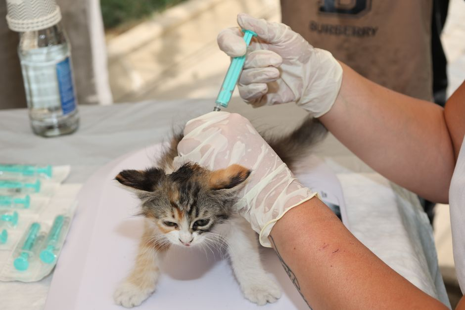

Vacunas indispensables para garantizar la salud de tu mascota

Photo: Tahir Xəlfəquliyev / Pexels
Las vacunas protegen a tu mascota de enfermedades graves, a veces mortales. El veterinario establece el calendario según la especie, la edad, el estilo de vida y las normas de tu región. Esto es lo que conviene saber para entender lo que te propone.
Vacunas básicas del perro
- moquillo, parvovirus y hepatitis infecciosa (adenovirus), a menudo en una misma vacuna;
- rabia, obligatoria por ley en muchas regiones.
Según el estilo de vida, el veterinario puede recomendar otras, como la de la leptospirosis o la de la tos de las perreras.
Vacunas básicas del gato
- panleucopenia (parvovirus felino), rinotraqueítis y calicivirus, en una misma vacuna;
- rabia, según la ley de tu región;
- leucemia felina (FeLV), recomendada para los gatitos y para todo gato que sale o convive con otros gatos.
La leucemia felina afecta solo a los gatos: no pasa a los perros ni a las personas.
A qué edad empezar
Las primeras vacunas se ponen generalmente hacia las 6 a 8 semanas, con refuerzos cada 3 a 4 semanas hasta aproximadamente las 16 semanas. Después, se pone un refuerzo al año y luego a intervalos que el veterinario adapta según el producto y la ley. No retrases estas citas: un cachorro o gatito sin la pauta completa sigue siendo vulnerable.
Otros animales
Los conejos, los hurones y las aves tienen sus propias recomendaciones, que varían según el país y las enfermedades presentes. Consulta a un veterinario que conozca estas especies. Los roedores como hámsteres, ratas y ratones no suelen vacunarse.
Después de la vacuna
Algo de cansancio o una pequeña hinchazón en el lugar del pinchazo durante uno o dos días es habitual. Llama de inmediato a la clínica si ves hinchazón de la cara, vómitos repetidos, dificultad para respirar o mucha debilidad.
Lleva la cartilla al día
La cartilla de vacunación se pide en residencias, peluquerías, viajes y para el registro municipal. Guárdala con tus documentos y llévala a cada visita.
Lo esencial
Las vacunas se ponen en la clínica veterinaria, por un profesional: no se compran para ponerlas uno mismo. Habla con tu veterinario para definir el calendario de tu mascota.